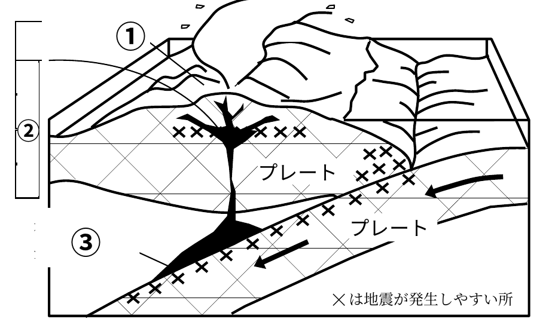

📋 確認問題(全8問)
問1図の①に当てはまる語句はどれか。

正解はア。①は、地表にある火山です。
問2図の②に当てはまる語句はどれか。②には、マグマがいったんたくわえられる。
正解はイ。②は、マグマがたくわえられるマグマだまりです。
問3図の③は、何を示しているか。
正解はイ。③は、プレートの中で岩石の一部がとけている所です。ここでマグマができます。
問4火山灰は、大きさが64mm以上の噴出物である。
× 火山灰は、大きさが2mm以下の細かい粒です。64mm以上のものは火山弾です。
問5火砕流は、時速100kmぐらいの速さで斜面を下りてくる。
○ 正解です。高温の火山ガスや火山灰が、とても速い速さで流れ下ります。
問6次の文の( )に入る語句の組み合わせとして、正しいものはどれか。
マグマが( A )に出てきたものを( B )という。
マグマが( A )に出てきたものを( B )という。
正解はウ。マグマが地表に出てきたものを溶岩といいます。
問7次のうち、火山の噴出物でないものはどれか。
正解はエ。プレートは地球の表面をおおう岩盤で、噴出物ではありません。
問8マグマが地表に出るとき、軽石にたくさんの穴ができるのは、なぜか。
正解はア。圧力が急に下がると、マグマにとけていたガスがふき出して、穴があいた岩石になります。